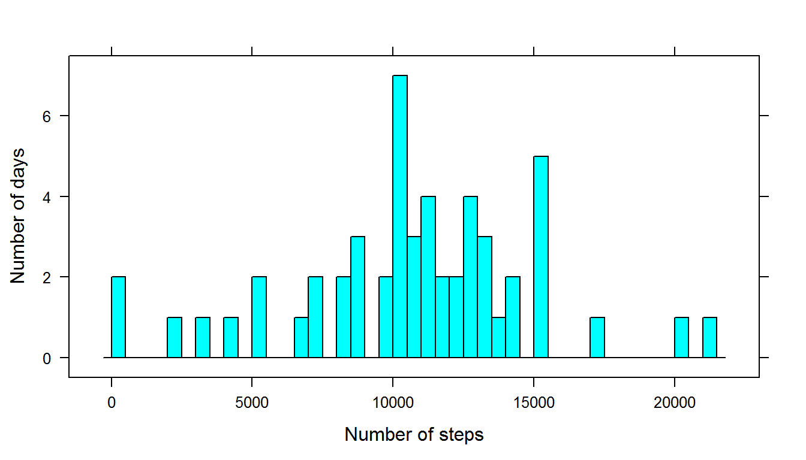
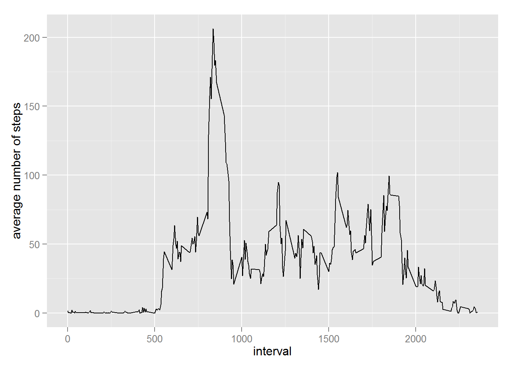
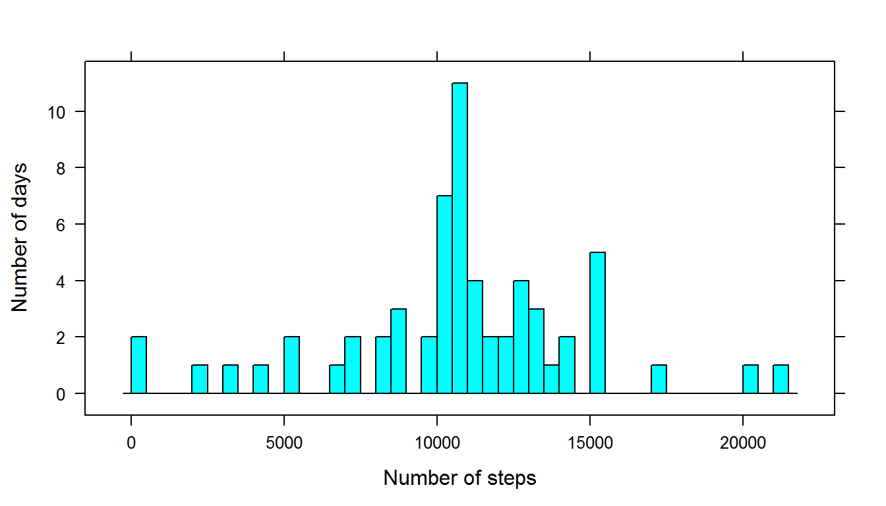
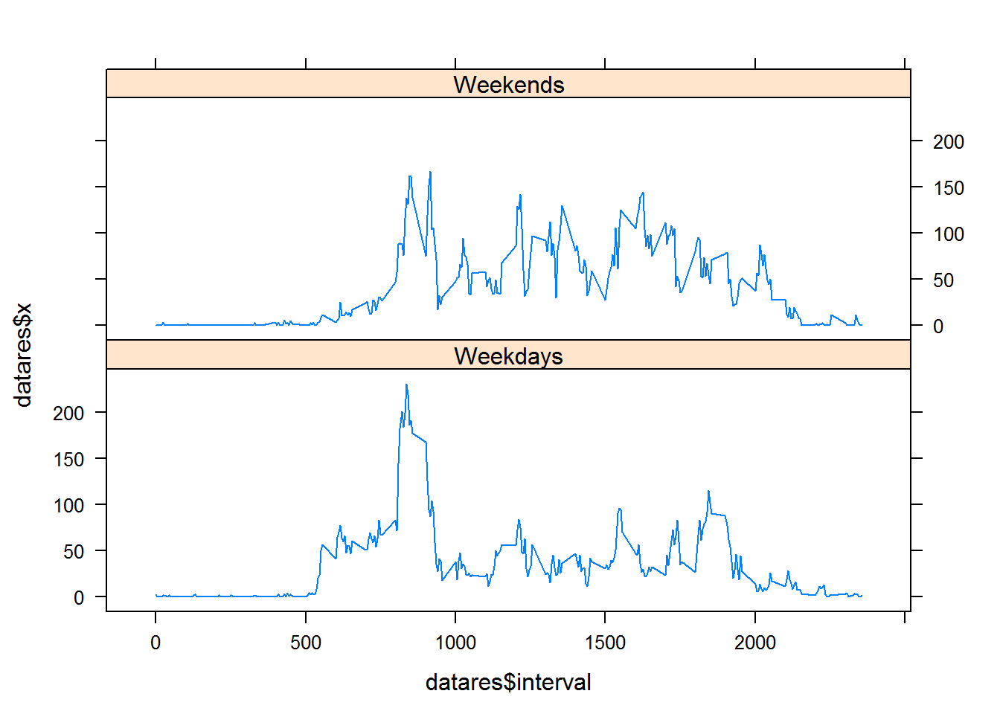

In this assignment data about personal movement will be studied.
library(lattice)
library(ggplot2)
data <- read.csv("activity.csv")
data$date <- as.Date(data$date, "%Y-%m-%d")In this part missing values are ignored. Making a histogram of the total number of steps taken per day and calculating mean and median total number of steps per day.
data_no_na <- data[complete.cases(data),]
data_grouped_by_date <- aggregate(data_no_na$steps,
by = list(date = data_no_na$date), FUN = "sum")
histogram(data_grouped_by_date$x, xlab = "Number of steps",
ylab = "Number of days", type = "count", breaks = nrow(data_grouped_by_date))
paste("Mean is", round(mean(data_grouped_by_date$x), digits = 3))## [1] "Mean is 10766.189"paste("Median is", round(median(data_grouped_by_date$x), digits = 3))## [1] "Median is 10765"data_grouped_by_interval<- aggregate(data_no_na$steps,
by = list(interval = data_no_na$interval), FUN = "mean")
qplot(data_grouped_by_interval$interval, data_grouped_by_interval$x, geom = "line")+ xlab("interval") + ylab("average number of steps")
Total number of rows with missing values:
nrow(data[complete.cases(data) == FALSE,])## [1] 2304Filling in missing values using mean for that 5-minute interval:
data2 <- data
for(i in 1:nrow(data2)){
if(complete.cases(data2)[i] == FALSE){
data2$steps[i] <- subset(data_grouped_by_interval, interval == data2$interval[i])$x
}
}Histogram of the total number of steps taken each day:
data_grouped_by_date2 <- aggregate(data2$steps,
by = list(date = data2$date), FUN = "sum")
histogram(data_grouped_by_date2$x, xlab = "Number of steps",
ylab = "Number of days", type = "count", breaks = nrow(data_grouped_by_date2)) 
Median and mean for the total number of steps taken per day:
paste("Mean is", round(mean(data_grouped_by_date2$x), digits = 3))## [1] "Mean is 10766.189"paste("Median is", round(median(data_grouped_by_date2$x), digits = 3))## [1] "Median is 10766.189"weekends <- c("Saturday", "Sunday")
for(i in 1:nrow(data2)){
data2$weekday[i] <- (weekdays(data2$date[i]) != weekends[1]
& weekdays(data2$date[i]) != weekends[2])
}
data_weekday <- data2[data2$weekday == TRUE,]
data_weekend <- data2[data2$weekday != TRUE,]
weekday_grouped_by_interval<- aggregate(data_weekday$steps,
by = list(interval = data_weekday$interval),
FUN = "mean")
weekday_grouped_by_interval$weekday <- TRUE
weekend_grouped_by_interval<- aggregate(data_weekend$steps,
by = list(interval = data_weekend$interval),
FUN = "mean")
weekend_grouped_by_interval$weekday <- FALSE
datares <- rbind(weekend_grouped_by_interval, weekday_grouped_by_interval)
f <- factor(datares$weekday, levels = c("TRUE", "FALSE"),labels = c("Weekdays", "Weekends"))
xyplot(datares$x ~ datares$interval | f, type = "l", layout = c(1, 2))